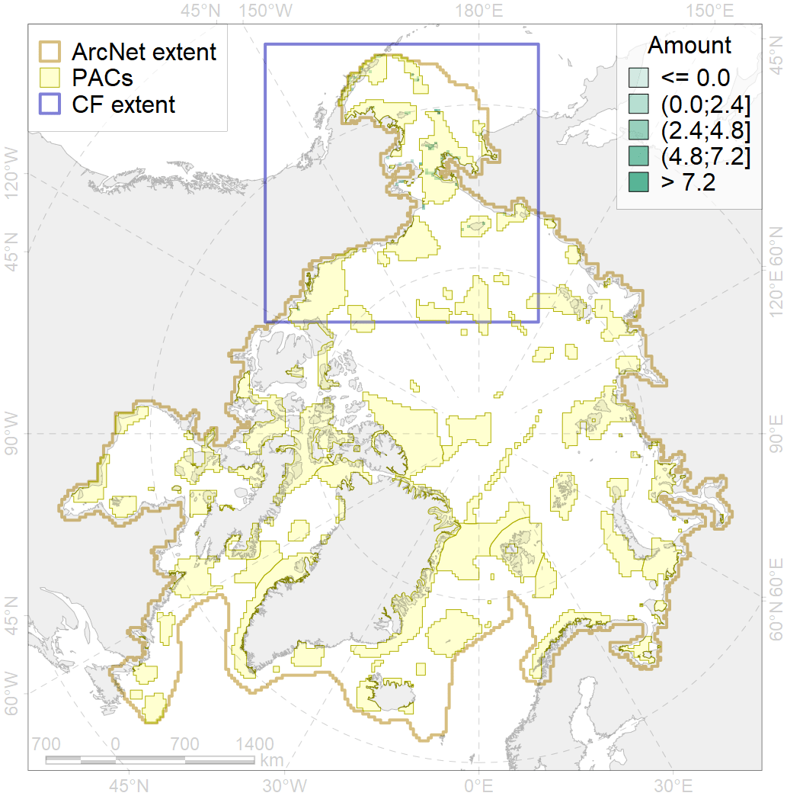

6079

| CF ID | 6079 |
| CF Name | Thick-billed murre (Uria lomvia arrra) breeding colonies |
| Time Period | 2017 |
| Source(s) | Smith et al 2017 |
| Seasonality | April-August |
| Depth Horizon | ≥0 m |
| Methodology | Field Data |
| Author Name | Gavrilo, Tertitski |
| Notes | |
| Conservation Target Set in the Scenario | 0.72 |
| Conservation Target Achieved in the Scenario | 0.773 (Scenario: 107.3%) |
| PAC ID | Proportion in the PAC | Contribution to ArcNet Target Achievement | PAC’s Contribution to the Achieved Target |
|---|---|---|---|
| 1 | 8.2% | 11.3% | 10.6% |
| 2 | 6.8% | 9.4% | 8.8% |
| 3 | 4.8% | 5.2% | 4.9% |
| 4 | 2.7% | 3.6% | 3.3% |
| 5 | 44.2% | 61.3% | 57.1% |
| 7 | 6.1% | 8.5% | 7.9% |
| 8 | 1.4% | 1.1% | 1.0% |
| 62 | 1.4% | 1.9% | 1.8% |
| inner | 75.5% | 102.4% | 95.4% |
| outer | 24.5% | 5.0% | 4.6% |